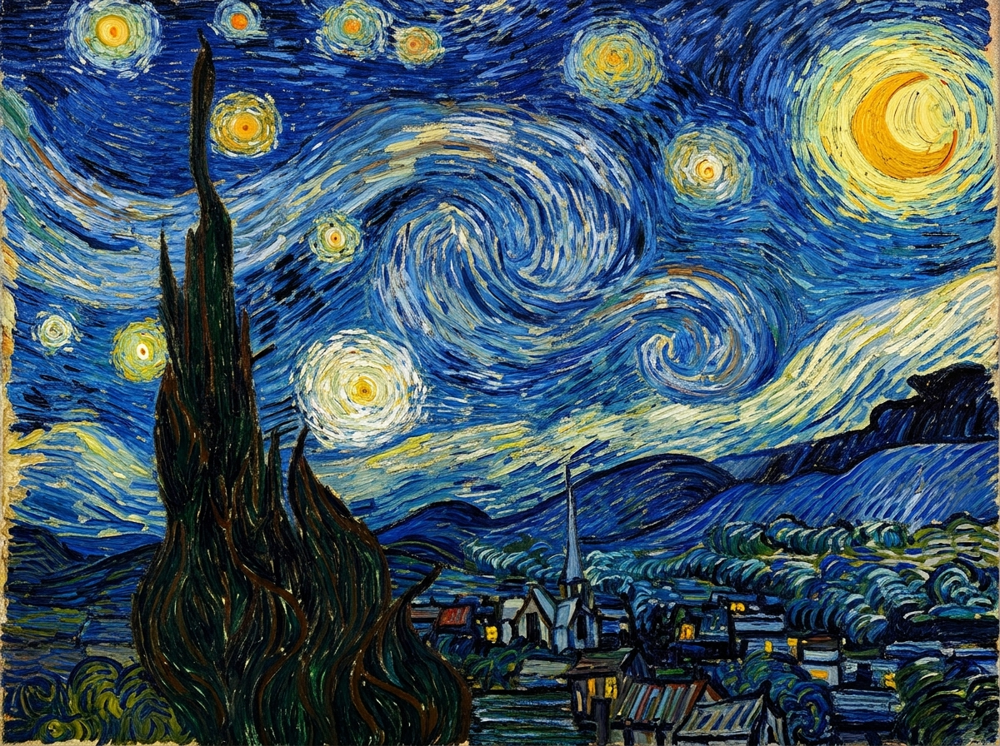

Input Content & Style Sources
Content Image (p)

Modern City Skyline
Style Image (a)

Van Gogh (Starry Night)
Style Presets:
Neural Stylized Output & Loss Convergence
Final Content Loss
0.0400
Final Gram Style Loss
0.000085
Joint Total Loss
0.125
Optimization Objective:
L_total = α × MSE(F_l, P_l) + β × ∑ w_l × ||G_l(x) - A_l||²